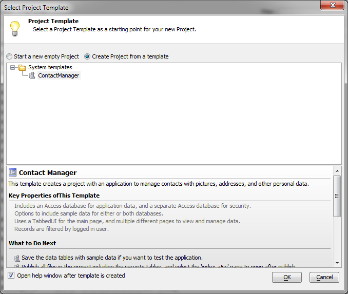
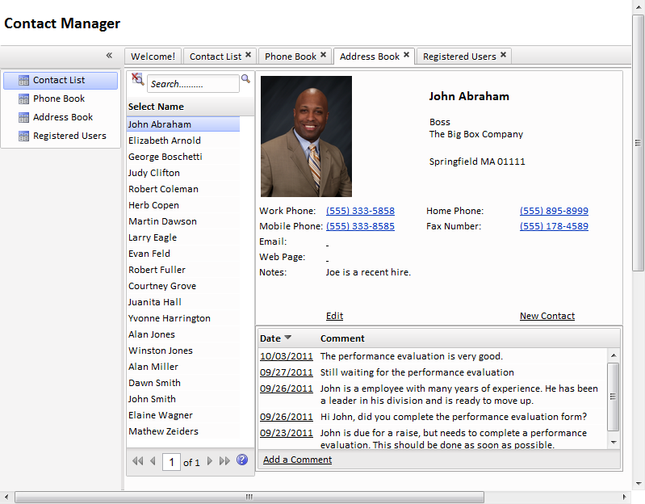

Web Contact Manager Template
The New Project Dialog now includes a new option to create project from a template. One system template has been provided, a web Contact Manager.
The web contact manager template is documented with help, but in addition two videos explain the process of using it. The first video shows you how to create an application from a project template:
Flash player not available.
Also viewable at http://www.ajaxvideotutorials.com/V11Videos/CreatingAnApplication_FromProjectTemplate.swf
The second video shows you all the options you can set in the web contact manager template, and how to use the web contact manager after you've created a copy with sample data included:
Flash player not available.
Also viewable at http://www.ajaxvideotutorials.com/V11Videos/Contact%20Manager-How%20it%20works.swf
Using this template, you can either create a pre-populated contact manager for test purposes or an unpopulated contact manager for your personal or company use. You many create as many contact managers as you want from this template, and customize individual instances as needed.

Using the web contact manager template is one way to go from newbie to success with Alpha Five web applications in a few minutes. If you're just starting to work with Alpha Five, a contact manager built from this template and populated with your company's employees might be a great way to show your boss the power of Alpha Five web applications.
The template creates Access MDB files and uses SQL queries. It is very simple to migrate these files to SQL Server or another industrial-strength SQL database, change the connection string in your production publication target, and wind up with a web contact manager that can easily support your whole department or even your whole company.
You can also enhance your contact manager with additional features and customize its look and feel, since it is built with standard Alpha Five components and styles. If there are features that you'd like to see built into the web contact manager template or additional templates that you'd find useful, let us know: we're always ready to listen to our customers.